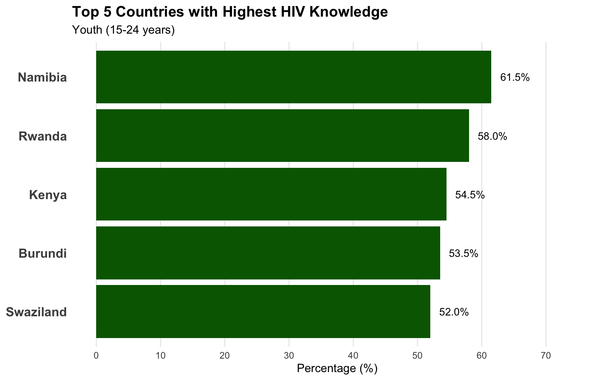
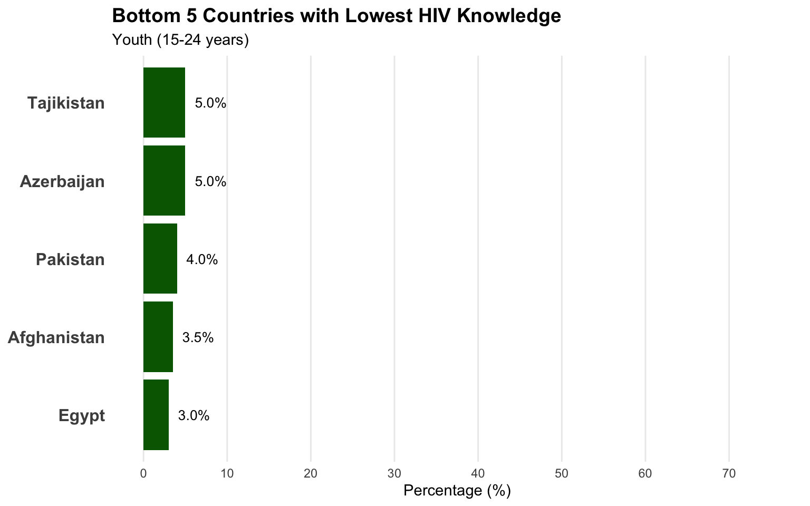
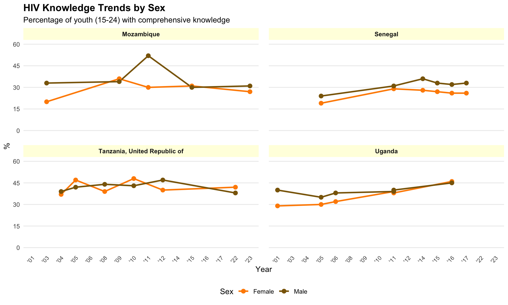
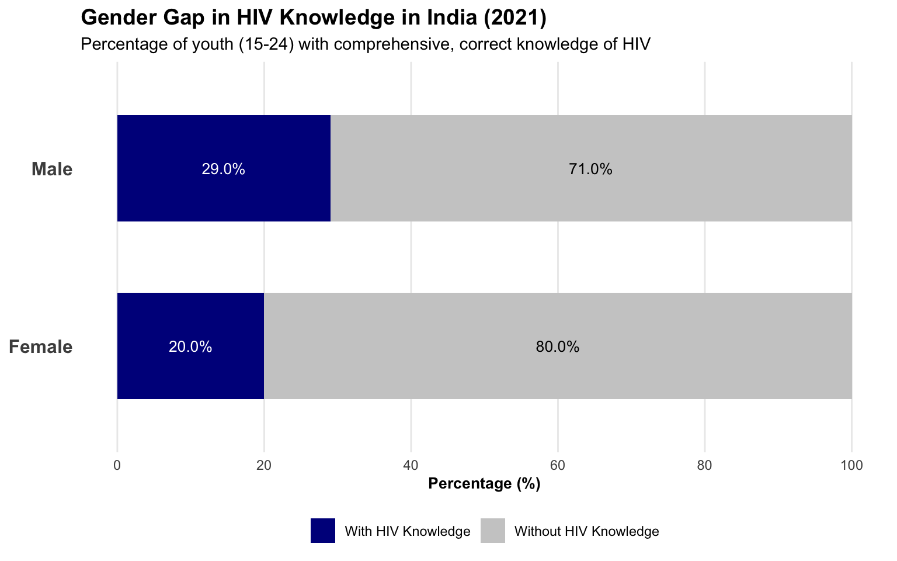
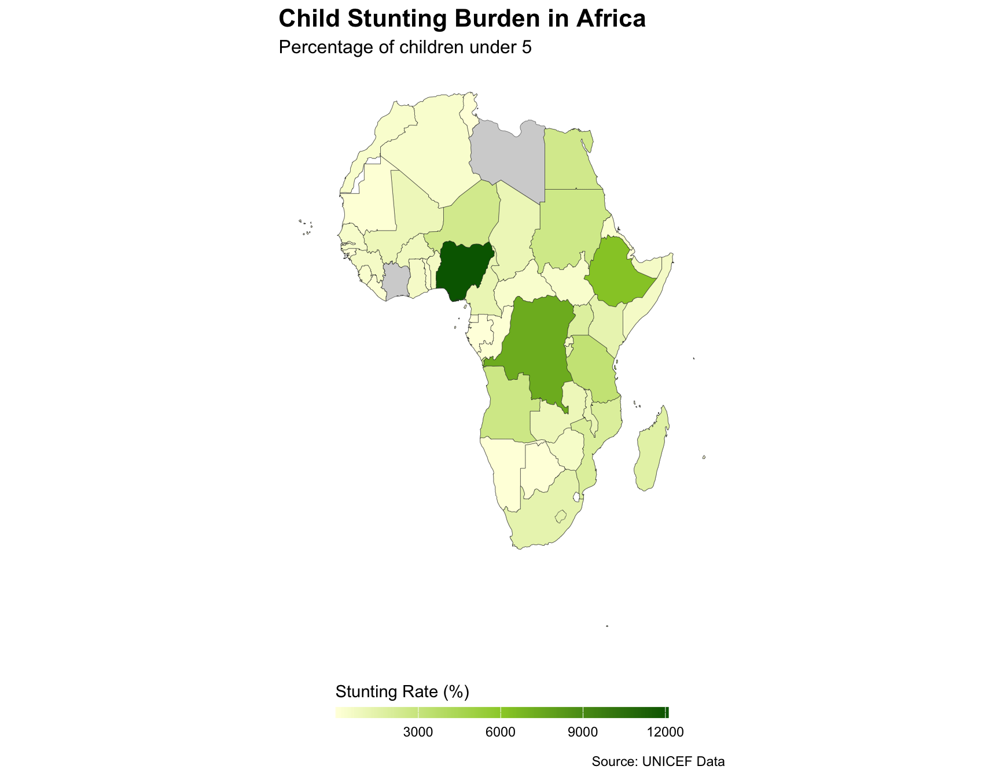
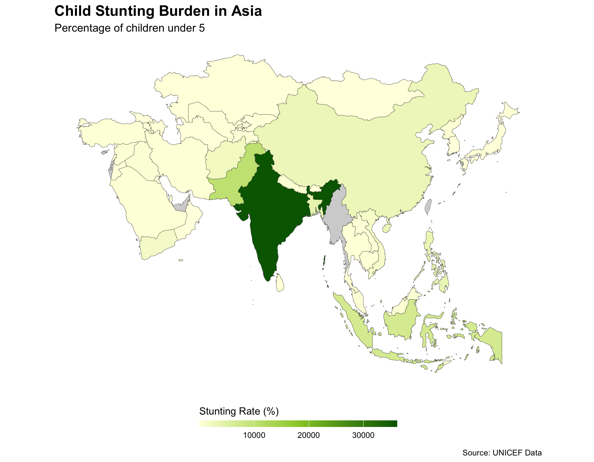
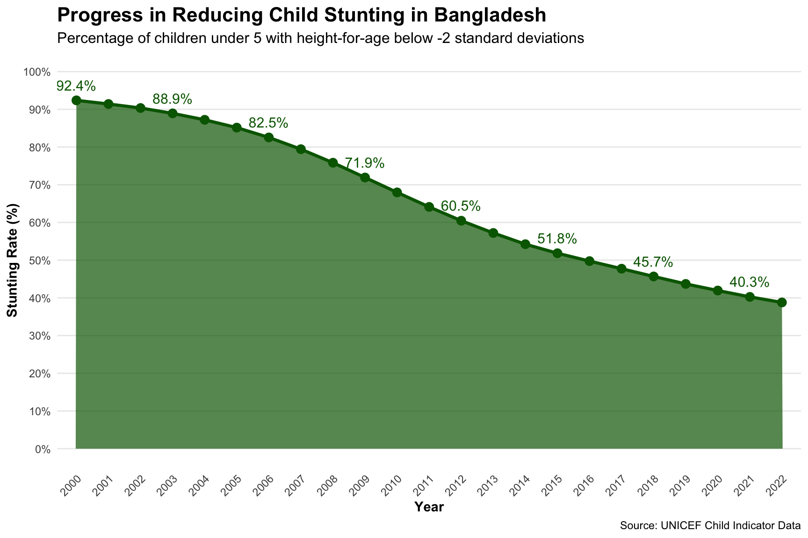

Show code
# Load necessary packages
library(dplyr)
library(readr)
library(maps)
library(ggplot2)Understanding Child Growth & HIV Awareness Worldwide
In every corner of our world, the journey of childhood unfolds with both promise and pitfalls. Where the glow of hope is often shadowed by the realities of stunted growth and the silent spread of HIV.
This dashboard invites you to explore the global landscape of child development, weaving together vivid data on child stunting and HIV awareness to reveal the stark contrasts and hidden connections shaping young lives.
Through insightful visualizations and thoughtful analysis, we aim to illuminate the urgent challenges and inspiring progress that define this complex story, empowering policymakers, advocates, and communities to drive meaningful change for the next generation.
# Load necessary packages
library(dplyr)
library(readr)
library(maps)
library(ggplot2)This comparison highlights the percentage of young people (aged 15–24) who possess comprehensive, correct knowledge of HIV across countries. By displaying both the leaders and laggards, we can better understand the global disparities in HIV education. This helps policymakers identify both success stories to emulate and areas where urgent action is needed.
# Load necessary packages
library(ggplot2)
library(dplyr)
# Read the combined indicator data
combined_indicators <- read_csv("Indicator_Combined.csv")
# Filter for HIV knowledge indicator and remove NA values
hiv_knowledge_data <- combined_indicators %>%
filter(grepl("comprehensive, correct knowledge of HIV", indicator)) %>%
filter(!is.na(obs_value))
# Get the most recent data point for each country by sex
recent_hiv_knowledge <- hiv_knowledge_data %>%
group_by(country, sex) %>%
arrange(desc(time_period)) %>%
slice(1) %>%
ungroup()
# Calculate average for both sexes for each country
avg_hiv_knowledge <- recent_hiv_knowledge %>%
group_by(country) %>%
summarize(avg_knowledge = mean(obs_value, na.rm = TRUE)) %>%
arrange(desc(avg_knowledge))
# Get top 5 countries
top_5_countries <- head(avg_hiv_knowledge, 5)
# Create the top 5 chart
top_chart <- ggplot(top_5_countries, aes(x = avg_knowledge, y = reorder(country, avg_knowledge))) +
geom_bar(stat = "identity", fill = "darkgreen") +
geom_text(aes(label = sprintf("%.1f%%", avg_knowledge)), hjust = -0.3, size = 3.5, color = "black") +
labs(title = "Top 5 Countries with Highest HIV Knowledge",
subtitle = "Youth (15-24 years)",
x = "Percentage (%)",
y = NULL) +
theme_minimal() +
theme(
plot.title = element_text(face = "bold", size = 14),
axis.text.y = element_text(size = 12, face = "bold"),
panel.grid.major.y = element_blank(),
panel.grid.minor.x = element_blank()
) +
scale_x_continuous(limits = c(0, 75), breaks = seq(0, 70, by = 10))
# Print the top chart
print(top_chart)
# Get bottom 5 countries - reusing variables from previous chunk
bottom_5_countries <- tail(avg_hiv_knowledge, 5)
# Create the bottom 5 chart
bottom_chart <- ggplot(bottom_5_countries, aes(x = avg_knowledge, y = reorder(country, avg_knowledge))) +
geom_bar(stat = "identity", fill = "darkgreen") +
geom_text(aes(label = sprintf("%.1f%%", avg_knowledge)), hjust = -0.3, size = 3.5, color = "black") +
labs(title = "Bottom 5 Countries with Lowest HIV Knowledge",
subtitle = "Youth (15-24 years)",
x = "Percentage (%)",
y = NULL) +
theme_minimal() +
theme(
plot.title = element_text(face = "bold", size = 14),
axis.text.y = element_text(size = 12, face = "bold"),
panel.grid.major.y = element_blank(),
panel.grid.minor.x = element_blank()
) +
scale_x_continuous(limits = c(0, 75), breaks = seq(0, 70, by = 10))
# Print the bottom chart
print(bottom_chart)
This tabbed comparison reveals stark disparities in HIV knowledge among youth globally. The top-performing countries (primarily in Eastern and Southern Africa) have achieved knowledge rates above 50%, while the lowest-performing countries show rates below 5%.
This significant gap (over 55 percentage points between highest and lowest) highlights implementation disparities in HIV education programs worldwide. Countries at the bottom of the ranking could benefit from adapting successful education strategies from top-performing nations.
This line chart tracks the evolution of HIV knowledge among young males and females in selected countries over time. The visual uncovers whether both boys and girls are benefiting equally from education efforts, and whether progress is steady, stagnant, or declining. It provides a clear picture of gender gaps and helps guide future interventions to ensure no one is left behind.
# Read the combined indicator data
combined_indicators <- read_csv("Indicator_Combined.csv")
# Filter for HIV knowledge indicator
hiv_knowledge_data <- combined_indicators %>%
filter(grepl("comprehensive, correct knowledge of HIV", indicator)) %>%
filter(!is.na(obs_value)) %>%
filter(sex %in% c("Female", "Male"))
# Find countries with the best trend data (most years, both sexes)
country_data_counts <- hiv_knowledge_data %>%
group_by(country, sex) %>%
summarize(data_points = n(), .groups = "drop") %>%
group_by(country) %>%
summarize(
total_points = sum(data_points),
has_both_sexes = n() > 1
) %>%
filter(has_both_sexes) %>%
arrange(desc(total_points))
# Select top 4 countries with the best trend data
top_trend_countries <- head(country_data_counts$country, 4)
# Filter to these countries with the best trends
trend_data <- hiv_knowledge_data %>%
filter(country %in% top_trend_countries)
# Convert time_period to character type to ensure it's treated as discrete
trend_data$time_period <- as.character(trend_data$time_period)
# Create shortened year labels
trend_data <- trend_data %>%
mutate(year_short = paste0("'", substr(time_period, 3, 4)))
# Create the line chart with cleaner formatting
hiv_trend_chart <- ggplot(trend_data, aes(x = year_short, y = obs_value, color = sex, group = interaction(country, sex))) +
geom_line(size = 1) +
geom_point(size = 2.5) +
facet_wrap(~country, ncol = 2) +
scale_color_manual(values = c("Female" = "darkorange", "Male" = "darkgoldenrod4")) +
# Use scale_x_discrete since years are discrete values
scale_x_discrete() +
labs(title = "HIV Knowledge Trends by Sex",
subtitle = "Percentage of youth (15-24) with comprehensive knowledge",
x = "Year",
y = "%",
color = "Sex") +
theme_minimal() +
theme(
plot.title = element_text(face = "bold", size = 14),
legend.position = "bottom",
panel.grid.minor = element_blank(),
panel.grid.major.x = element_blank(),
strip.background = element_rect(fill = "lightyellow", color = NA),
strip.text = element_text(face = "bold"),
axis.text.x = element_text(angle = 45, hjust = 1, size = 8),
axis.title = element_text(size = 11),
panel.spacing = unit(1, "lines")
) +
scale_y_continuous(limits = c(0, 60), breaks = seq(0, 60, by = 15))
print(hiv_trend_chart)
This line chart reveals the evolution of HIV knowledge among young people across countries with the richest trend data, showing patterns of change over time for both males and females.
This stacked bar chart shows, side by side, the proportion of young men and women with comprehensive HIV knowledge in India for the latest year. By visualizing the gender gap, this chart draws attention to disparities in access to information and the need for gender-sensitive approaches in health education.
# Read the combined indicator data
combined_indicators <- read_csv("Indicator_Combined.csv")
# Filter for HIV knowledge data for India
india_hiv_data <- combined_indicators %>%
filter(grepl("comprehensive, correct knowledge of HIV", indicator)) %>%
filter(country == "India") %>%
filter(sex %in% c("Female", "Male"))
# Get the most recent year's data
latest_year <- max(india_hiv_data$time_period)
latest_data <- india_hiv_data %>%
filter(time_period == latest_year)
# Prepare data for the chart
chart_data <- latest_data %>%
mutate(
With_Knowledge = obs_value,
Without_Knowledge = 100 - obs_value
) %>%
select(sex, With_Knowledge, Without_Knowledge) %>%
# Reshape for plotting
tidyr::pivot_longer(
cols = c(With_Knowledge, Without_Knowledge),
names_to = "knowledge_status",
values_to = "percentage"
)
# Create the stacked bar chart with correct colors
gender_gap_chart <- ggplot(chart_data, aes(x = percentage, y = sex, fill = knowledge_status)) +
# Reverse the order so "Without_Knowledge" appears first (right to left)
geom_col(position = position_stack(reverse = TRUE), width = 0.6) +
# Set the colors correctly - blue for With Knowledge, gray for Without Knowledge
scale_fill_manual(
values = c("With_Knowledge" = "darkblue", "Without_Knowledge" = "#CCCCCC"),
labels = c("With HIV Knowledge", "Without HIV Knowledge")
) +
labs(
title = paste0("Gender Gap in HIV Knowledge in India (", latest_year, ")"),
subtitle = "Percentage of youth (15-24) with comprehensive, correct knowledge of HIV",
x = "Percentage (%)",
y = NULL,
fill = NULL
) +
# Add text labels for percentages
geom_text(
aes(label = sprintf("%.1f%%", percentage),
x = ifelse(knowledge_status == "With_Knowledge",
percentage/2,
100 - percentage/2)),
color = ifelse(chart_data$knowledge_status == "With_Knowledge", "white", "black"),
size = 3.5
) +
theme_minimal() +
theme(
plot.title = element_text(face = "bold", size = 14),
legend.position = "bottom",
panel.grid.major.y = element_blank(),
panel.grid.minor = element_blank(),
axis.text.y = element_text(size = 12, face = "bold"),
axis.title.x = element_text(size = 10, face = "bold")
) +
scale_x_continuous(limits = c(0, 100), breaks = seq(0, 100, by = 20))
print(gender_gap_chart)
This bar chart highlights the gender disparity in HIV knowledge among young people in India based on the most recent available data. The visualization clearly illustrates that only a small percentage of young people in India possess comprehensive HIV knowledge, with a noticeable gap between males and females.
The chart shows that while a higher percentage of males have comprehensive HIV knowledge (blue) compared to females, the overall levels remain low for both genders. These findings point to the need for more effective HIV education initiatives that address gender-specific barriers to information access.
This map displays the percentage of children under 5 affected by stunting (low height-for-age) in Africa and Asia, the two continents with the highest burden of child malnutrition. By focusing on these regions, we can better visualize where interventions are most urgently needed and identify patterns of child nutrition challenges.
# Load necessary packages
library(ggplot2)
library(dplyr)
library(maps)
# Read the combined indicator data
combined_indicators <- read_csv("Indicator_Combined.csv")
# Filter for stunting data - look for height-for-age indicators
stunting_data <- combined_indicators %>%
filter(grepl("height.for.age", indicator, ignore.case = TRUE) |
grepl("stunting", indicator, ignore.case = TRUE)) %>%
filter(!is.na(obs_value)) %>%
# Focus on overall numbers, not gender-specific
filter(sex == "Total" | is.na(sex))
# Get the most recent data for each country
recent_stunting <- stunting_data %>%
group_by(country) %>%
arrange(desc(time_period)) %>%
slice(1) %>%
ungroup() %>%
select(country, obs_value)
# Load Africa map data
africa_map <- map_data("world", region = c(
# North Africa
"Algeria", "Egypt", "Libya", "Morocco", "Tunisia", "Sudan", "South Sudan",
# West Africa
"Benin", "Burkina Faso", "Cape Verde", "Ivory Coast", "Gambia", "Ghana",
"Guinea", "Guinea-Bissau", "Liberia", "Mali", "Mauritania", "Niger",
"Nigeria", "Senegal", "Sierra Leone", "Togo",
# Central Africa
"Cameroon", "Central African Republic", "Chad", "Democratic Republic of the Congo",
"Republic of Congo", "Equatorial Guinea", "Gabon", "Sao Tome and Principe",
# East Africa
"Burundi", "Comoros", "Djibouti", "Ethiopia", "Eritrea", "Kenya", "Madagascar",
"Malawi", "Mauritius", "Mozambique", "Rwanda", "Seychelles", "Somalia",
"Tanzania", "Uganda", "Zambia", "Zimbabwe",
# Southern Africa
"Angola", "Botswana", "Lesotho", "Namibia", "South Africa", "eSwatini"
))
# Create a mapping dictionary for common country name mismatches
country_mapping <- c(
"Congo, Democratic Republic of the" = "Democratic Republic of the Congo",
"Congo, the Democratic Republic of the" = "Democratic Republic of the Congo",
"Congo" = "Republic of Congo",
"Tanzania, United Republic of" = "Tanzania",
"Swaziland" = "eSwatini",
"Ivory Coast" = "Cote d'Ivoire"
)
# Apply the mapping to handle mismatched country names
recent_stunting <- recent_stunting %>%
mutate(map_region = case_when(
country %in% names(country_mapping) ~ country_mapping[country],
TRUE ~ country
))
# Merge the Africa map with stunting data
africa_data <- left_join(africa_map, recent_stunting, by = c("region" = "map_region"))
# Create the Africa map visualization
africa_stunting_map <- ggplot() +
# Base map (all countries gray)
geom_polygon(data = africa_map,
aes(x = long, y = lat, group = group),
fill = "lightgray", color = "#333333", size = 0.1) +
# Add data where available
geom_polygon(data = africa_data %>% filter(!is.na(obs_value)),
aes(x = long, y = lat, group = group, fill = obs_value),
color = "#333333", size = 0.1) +
# Create color scale from light yellow to dark green
scale_fill_gradientn(
colors = c("lightyellow", "yellowgreen", "darkgreen"),
name = "Stunting Rate (%)",
guide = guide_colorbar(barwidth = 15, barheight = 0.5, title.position = "top")
) +
# Labels and titles
labs(
title = "Child Stunting Burden in Africa",
subtitle = "Percentage of children under 5",
caption = "Source: UNICEF Data"
) +
# Clean theme
theme_minimal() +
theme(
plot.title = element_text(face = "bold", size = 16),
plot.subtitle = element_text(size = 12),
panel.grid = element_blank(),
axis.text = element_blank(),
axis.title = element_blank(),
axis.ticks = element_blank(),
legend.position = "bottom"
) +
# Fix the aspect ratio
coord_fixed(1.3)
print(africa_stunting_map)
# Load Asia map data (reusing previous variables)
asia_map <- map_data("world", region = c(
# Central Asia
"Kazakhstan", "Kyrgyzstan", "Tajikistan", "Turkmenistan", "Uzbekistan",
# East Asia
"China", "Japan", "Mongolia", "North Korea", "South Korea", "Taiwan",
# South Asia
"Afghanistan", "Bangladesh", "Bhutan", "India", "Maldives", "Nepal", "Pakistan", "Sri Lanka",
# Southeast Asia
"Brunei", "Cambodia", "Indonesia", "Laos", "Malaysia", "Myanmar", "Philippines",
"Singapore", "Thailand", "Timor-Leste", "Vietnam",
# West Asia / Middle East
"Armenia", "Azerbaijan", "Bahrain", "Cyprus", "Georgia", "Iran", "Iraq", "Israel",
"Jordan", "Kuwait", "Lebanon", "Oman", "Palestine", "Qatar", "Saudi Arabia",
"Syria", "Turkey", "United Arab Emirates", "Yemen"
))
# Additional mappings for Asia countries
asia_country_mapping <- c(
"Iran, Islamic Republic of" = "Iran",
"Korea, Democratic People's Republic of" = "North Korea",
"Korea, Republic of" = "South Korea",
"Lao People's Democratic Republic" = "Laos",
"Syrian Arab Republic" = "Syria",
"Viet Nam" = "Vietnam",
"Myanmar" = "Burma"
)
# Update the mapping dictionary with Asia-specific matches
country_mapping <- c(country_mapping, asia_country_mapping)
# Apply the mapping again with updated dictionary
recent_stunting <- stunting_data %>%
group_by(country) %>%
arrange(desc(time_period)) %>%
slice(1) %>%
ungroup() %>%
select(country, obs_value) %>%
mutate(map_region = case_when(
country %in% names(country_mapping) ~ country_mapping[country],
TRUE ~ country
))
# Merge the Asia map with stunting data
asia_data <- left_join(asia_map, recent_stunting, by = c("region" = "map_region"))
# Create the Asia map visualization
asia_stunting_map <- ggplot() +
# Base map (all countries gray)
geom_polygon(data = asia_map,
aes(x = long, y = lat, group = group),
fill = "lightgray", color = "#333333", size = 0.1) +
# Add data where available
geom_polygon(data = asia_data %>% filter(!is.na(obs_value)),
aes(x = long, y = lat, group = group, fill = obs_value),
color = "#333333", size = 0.1) +
# Create color scale from light yellow to dark green
scale_fill_gradientn(
colors = c("lightyellow", "yellowgreen", "darkgreen"),
name = "Stunting Rate (%)",
guide = guide_colorbar(barwidth = 15, barheight = 0.5, title.position = "top")
) +
# Labels and titles
labs(
title = "Child Stunting Burden in Asia",
subtitle = "Percentage of children under 5",
caption = "Source: UNICEF Data"
) +
# Clean theme
theme_minimal() +
theme(
plot.title = element_text(face = "bold", size = 16),
plot.subtitle = element_text(size = 12),
panel.grid = element_blank(),
axis.text = element_blank(),
axis.title = element_blank(),
axis.ticks = element_blank(),
legend.position = "bottom"
) +
# Fix the aspect ratio and zoom on Asia
coord_fixed(1.3)
print(asia_stunting_map)
These maps illustrate the geographic distribution of child stunting across Africa and Asia, revealing distinct regional patterns:
Concentration in Sub-Saharan Africa: Countries in the Sahel region and Central Africa show some of the highest stunting rates, with over 30% of children affected in many nations.
South Asian hotspot: Countries like India, Pakistan, Bangladesh, and Nepal form a significant hotspot of child stunting, with India displaying particularly concerning rates.
Variation within regions: Both continents show significant variation, with some countries making substantial progress while neighboring nations continue to struggle.
The burden of stunting in these two continents is particularly concerning as they collectively account for over 80% of all stunted children worldwide. Targeted interventions in the darkest green areas represent opportunities for significant improvements in global child nutrition outcomes.
This area chart tracks Bangladesh’s progress in reducing child stunting over time. The visualization demonstrates the country’s commitment to improving child nutrition and highlights the effectiveness of targeted interventions implemented over the years. The downward trend represents real improvements in the lives of children and showcases a public health success story that other countries might learn from.
# Read the combined indicator data
combined_indicators <- read_csv("Indicator_Combined.csv")
# Filter specifically for the standard stunting indicator in Bangladesh
bangladesh_stunting <- combined_indicators %>%
filter(country == "Bangladesh") %>%
filter(
grepl("stunting|height.for.age", indicator, ignore.case = TRUE) &
!grepl("wasting|weight.for.height", indicator, ignore.case = TRUE)
) %>%
filter(!is.na(obs_value)) %>%
filter(sex == "Total" | is.na(sex))
# Ensure values are in the correct percentage range and sort by time
bangladesh_stunting <- bangladesh_stunting %>%
mutate(
# Ensure values are in 0-100 range
obs_value = ifelse(obs_value > 100, obs_value/100, obs_value),
obs_value = ifelse(obs_value > 100, 100, obs_value),
# Convert time_period to character for discrete x-axis
time_period = as.character(time_period)
) %>%
arrange(time_period)
# Create a separate dataset for labels to avoid the subsetting error
# Just select every nth point for labeling to avoid overcrowding
label_data <- bangladesh_stunting
if(nrow(label_data) > 8) {
# Calculate indices to keep - simple integer division
n <- ceiling(nrow(label_data) / 8)
indices_to_keep <- seq(1, nrow(label_data), by = n)
label_data <- label_data[indices_to_keep, ]
}
# Create the area chart with correct percentage range
stunting_area_chart <- ggplot(bangladesh_stunting, aes(x = time_period, y = obs_value, group = 1)) +
# Create the area with dark green color
geom_area(fill = "darkgreen", alpha = 0.7) +
# Add line on top of area for clarity
geom_line(color = "darkgreen", size = 1.2) +
# Add points to show actual data points
geom_point(color = "darkgreen", size = 3) +
# Add labels for selected data points using the separate label_data
geom_text(
data = label_data,
aes(label = sprintf("%.1f%%", obs_value)),
vjust = -1, size = 4, color = "darkgreen"
) +
# Set appropriate labels
labs(
title = "Progress in Reducing Child Stunting in Bangladesh",
subtitle = "Percentage of children under 5 with height-for-age below -2 standard deviations",
x = "Year",
y = "Stunting Rate (%)",
caption = "Source: UNICEF Child Indicator Data"
) +
# Use discrete x scale
scale_x_discrete() +
# Set clean theme
theme_minimal() +
theme(
plot.title = element_text(face = "bold", size = 16),
plot.subtitle = element_text(size = 12),
axis.title = element_text(face = "bold"),
panel.grid.minor = element_blank(),
panel.grid.major.x = element_blank(),
axis.text.x = element_text(angle = 45, hjust = 1)
) +
# Ensure y-axis is properly bounded between 0-100% with appropriate breaks
scale_y_continuous(
limits = c(0, 100),
breaks = seq(0, 100, by = 10),
labels = function(x) paste0(x, "%")
)
# Print the chart
print(stunting_area_chart)
This area chart illustrates Bangladesh’s remarkable journey in reducing the prevalence of child stunting over time. The dark green area represents the percentage of children under 5 who are stunted (height-for-age below -2 standard deviations from the median).
The downward slope of the chart tells a positive story of nutrition improvement in Bangladesh, which has been achieved through a combination of:
Targeted nutrition interventions - Including micronutrient supplementation, promotion of exclusive breastfeeding, and complementary feeding practices
Broader development progress - Economic growth, improved food security, and enhanced maternal education
Health system strengthening - Better access to healthcare services, improved water and sanitation facilities, and increased immunization coverage
Bangladesh’s progress serves as an inspiring example for other countries facing similar challenges. The consistent decline demonstrates that with sustained commitment and evidence-based approaches, significant improvements in child nutrition outcomes are achievable even in resource-constrained settings.
The dashboard clearly shows that child stunting remains a major issue in several countries, especially in South Asia and sub-Saharan Africa, where millions of children are affected. The highest numbers are seen in countries like India, Pakistan, and Nigeria. While there has been some progress over the years in reducing stunting globally, the pace of improvement is uneven. The data also highlights a strong link between a country’s population size and the number of stunted children, but it’s clear that other factors like poverty and access to health services play a big role.
By acting on these recommendations, we can accelerate progress and help more children grow up healthy and strong.